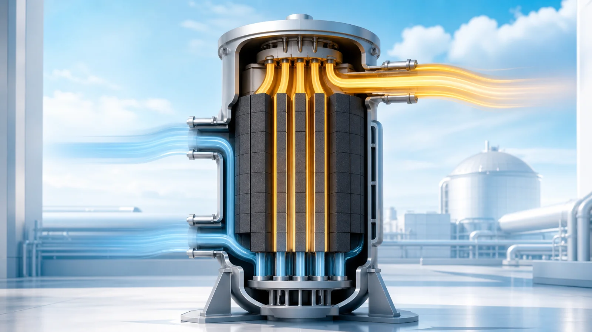
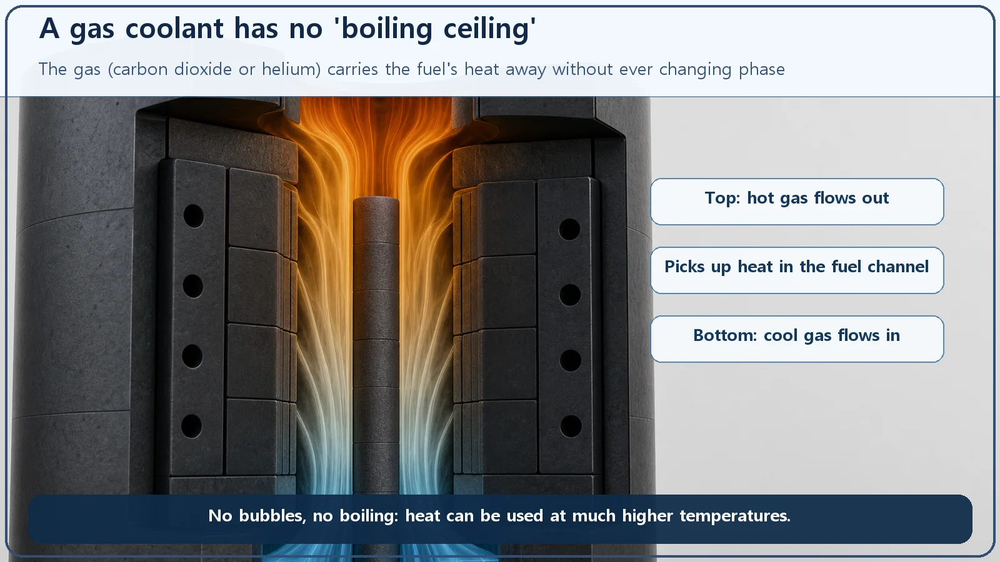
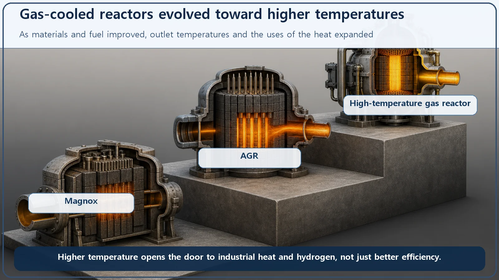

Reactor Types & Plant Systems · 182
A Coolant That Never Boils? Gas-Cooled Reactors Trade Water for Wind
A gas never boils, so it can carry reactor heat to far higher temperatures than water. The catch is that thin gas moves heat only a little at a time.

A gas-cooled reactor carries heat out of its core with a gas, usually carbon dioxide or helium, instead of water. A gas cannot boil, so there is no boiling ceiling and the outlet temperature can climb far higher, opening the way to better efficiency, industrial heat and hydrogen. The price is low density: the gas carries heat only a little at a time, so it needs big blowers, large surfaces and a pressurized system.
Boiling water versus an air fryer
Boil an egg as long as you like and the water never gets hotter than about 100°C; it just boils harder. The hot air inside an air fryer is different: it sails past 200°C without any fuss. Both are doing the same job, moving heat, but whether you use water or a gas decides which range of temperatures you can reach at all.
Reactors face the same fork in the road. Most nuclear plants carry the core's heat away with water. What happens if you put a gas there instead? That is today's subject: the gas-cooled reactor.
A reactor that blows instead of pours
In one sentence: a gas-cooled reactor is a reactor that uses a gas, rather than liquid water, as the coolant that carries heat out of the core. The gas is usually carbon dioxide (CO₂) or helium (He). The hot gas leaving the core boils water into steam, and the steam spins a turbine, just as in other nuclear plants. The only difference is that what sweeps past the fuel and picks up its heat is a stream of hot "wind" rather than water.
One thing to settle first. The name "gas-cooled" refers only to the coolant, the substance that carries heat. A reactor also needs a moderator, a material that slows fast neutrons down to the low speeds at which fission happens readily, and the well-known gas-cooled reactors usually give that job to graphite. In a light-water reactor, water does both jobs. In a gas-cooled reactor the work is split: gas carries the heat, graphite slows the neutrons.

Three character traits of a gas coolant
Swap water for gas and three traits come along with it.
First, it doesn't boil, so there's no "ceiling." A water-cooled reactor always has to watch for boiling limits. If the water suddenly turns into a vapor film over the fuel surface, heat stops getting out. And keeping water liquid at high temperature takes enormous pressure: a pressurized water reactor holds its primary system at about 150 atmospheres, and even then the water tops out around 320°C. A gas is already a gas. There is nothing left to boil, so the kind of accident in which boiling suddenly cuts off cooling doesn't exist for it in principle.
Second, it can go much hotter. With no ceiling, the outlet temperature can be set far above that of a water-cooled reactor. That brings two gifts: generation becomes more efficient (the hotter the heat, the more of it can be turned into electricity), and the heat becomes useful beyond electricity, for high-temperature industrial processes or hydrogen production. Advanced gas-cooled reactors run well above 600°C at the outlet, and helium-cooled high-temperature gas reactors aim for the 700–900°C range. (Exact design values vary by reactor type, unit and source, so they are given only approximately.)
Third, it carries heat only a little at a time. This is the gas's weak spot. Gas has very low density, so a given volume holds far less heat than the same volume of water; think of a cup of water versus a cup of air. To remove the same heat, the gas has to be circulated in large amounts and at high speed. Big blowers (circulators) do that work, and the power they use eats up part of the plant's own output. Heat-transfer surfaces must be large, and the whole system is pressurized to raise the gas density. That's why gas-cooled cores and equipment tend to be bulky.
In short, gas cooling is a trade: you gain high temperature and pay for it with the hard work of moving heat. Neither option wins in every way; the choice depends on what the design is aiming for.
Three siblings climbing a temperature staircase
There are three representative types of gas-cooled reactor, differing in their gas and temperature level, and together they look like a family climbing a staircase of temperature.
The first step is Magnox, an early British design. It is cooled by carbon dioxide and moderated by graphite, and its natural uranium metal fuel is clad in a magnesium alloy. That oxidation-resistant cladding alloy gave the design its name. Its outlet temperature was low, so its efficiency was modest.
The second step is the Advanced Gas-cooled Reactor (AGR). It keeps the carbon dioxide and graphite combination but switches to low-enriched uranium dioxide fuel and stainless steel cladding, which raised the outlet temperature substantially. Its generating efficiency climbed above that of water-cooled reactors.
The third step is the High-Temperature Gas-cooled Reactor (HTGR). It switches the coolant to helium and uses a special fuel of tiny kernels wrapped in several coating layers (TRISO particles), aiming beyond 700°C and up into the 900°C range. At those temperatures it can supply high-temperature industrial heat or hydrogen production as well as electricity. Helium barely reacts chemically, so it stays easy to handle even at such extreme temperatures. This type has recently reached the commercial operation stage.

Keeping it straight from water cooling
"Cooling with gas must be more dangerous than water." That's not a conclusion you can jump to. With no phase change, boiling can't suddenly cut off cooling. Gas cooling has its own design challenges instead: because the gas is so thin, it is hard for it to remove heat by natural circulation alone once the blowers stop. Water and gas cooling are not "safer" and "less safe"; they are two choices with different patterns of strengths and weaknesses.
"Gas-cooled reactor" means "high-temperature gas reactor." No. The HTGR is the helium-cooled, very-high-temperature youngest member of the family. Magnox and AGR, running on carbon dioxide at moderate temperatures, are gas-cooled reactors too.
"Coolant and moderator are the same thing." They are different roles. "Cooled by gas" is about carrying heat; slowing neutrons is usually handled separately by graphite. Whether one substance (water) does both jobs or the jobs are split is another fork separating water-cooled from gas-cooled reactors.
The whole story in one line
Without heavy math, the way a coolant carries heat fits in one line:
Heat carried ≈ flow rate × heat capacity per unit × temperature rise
Gas has low density, so each bit of flow holds little heat. To remove the same heat, you either increase the flow (circulate more gas, faster) or increase the temperature rise (run hotter). Big blowers, a pressurized system and high operating temperatures: the gas-cooled reactor's character is packed into that single line.
The one-line takeaways
- A gas-cooled reactor uses a gas, mainly carbon dioxide or helium, instead of water to carry heat out of the core.
- Gas doesn't boil, so it has no "ceiling" and can reach much higher temperatures (better efficiency, industrial heat, hydrogen); but its low density means big blowers, large surfaces and pressurization.
- The family runs Magnox → AGR → HTGR; as the gas and temperature change, efficiency and high-temperature uses widen.
- Coolant (gas) and moderator (usually graphite) are separate roles, unlike in a light-water reactor.
- "Heat carried ≈ flow rate × heat capacity per unit × temperature rise" sums up gas-cooled reactor design.
Change only what cools the core, and the reachable temperature, the size of the equipment, and even what the reactor can make besides electricity all change with it. Once you have a feel for that, the personalities of other reactor types come into much sharper focus.